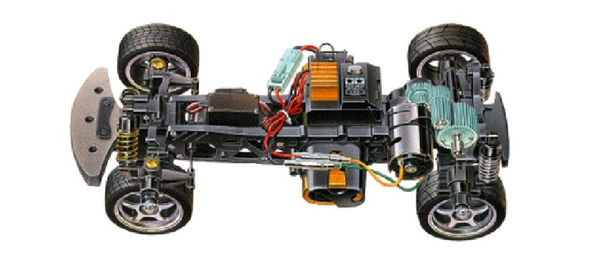

タミヤ M-04

引用元画像:タミヤ公式サイト
📋 基本情報
| メーカー | タミヤ（Tamiya） |
|---|---|
| 機種名 | M-04 |
| 型番 | M-04M（225mmホイールベース）/ M-04L（239mmホイールベース） |
| 発売時期 | 1999年 |
| 生産状況 | 生産終了 |
| カテゴリー | ラジコンカー（1/10スケール 電動RCカー） |
| サブカテゴリー | Mシャーシ（コンパクトRR駆動ツーリングカー） |
📏 シャーシスペック
| 全長 | 搭載ボディにより異なる（例：M-04L = 409mm） |
|---|---|
| 全幅 | 搭載ボディにより異なる（例：M-04L = 177mm） |
| ホイールベース | M-04M: 225mm / M-04L: 239mm（S寸は存在しない） |
| シャーシ重量 | 914g（M-04L） |
| トレッド | フロント140mm / リヤ148mm（M-04L） |
| タイヤ幅/径 | 前後とも27mm / 65mm（M-04L） |
| フレーム | ABSモノコックシャーシ＋ポリカーボネート製ギヤボックス |
⚙️ 駆動系
| 駆動方式 | リヤモーター・後輪駆動（MR/RR） |
|---|---|
| デフギヤ | ギア駆動（ベルト駆動ではない） |
| ギヤ比 | 6.82:1（M-04L） |
| モーター | 540タイプ |
🔧 サスペンション
| 形式 | 4輪ダブルウィッシュボーン独立懸架 |
|---|---|
| ダンパー | コイルスプリング式フリクションダンパー×4 |
| ステアリング | 3分割タイロッド式 |
💡 特徴
M-02の後継機として登場
- 1999年にM-02の後継機として発売
- M-02から大幅な改良を実施
- RR駆動（後輪駆動）による優れたトラクション性能
改良されたダンパーシステム
- M-02の水平マウント摩擦ダンパーを廃止
- 4本のコイルオーバー摩擦ダンパーに変更
- オイルダンパーに交換することでハンドリングが大幅に改善可能
- より細かなセッティングが可能に
強固な構造設計
- ABSモノコックシャーシで軽量かつ高剛性を実現
- ギヤボックスがシャーシから分離可能で、メンテナンス性が向上
- スリムで軽量な設計
ホイールベース調整可能
- M-04M（225mm）とM-04L（239mm）の2種類のホイールベース
- スペーサー追加でホイールベース調整可能
- 多彩なボディに対応可能
🔧 ぽすとそに工房での修理実績
修理難易度
★★★★☆（高難易度、パーツ入手困難）
よくある故障・注意点
- 1999年発売の非常に古いシャーシのため、パーツ入手が極めて困難
- ギア駆動のため、ギアの摩耗が弱点（特にヘッドオン衝突時に破損しやすい）
- 標準はプラスチック/ナイロンブッシュベアリングのため、ボールベアリング化が推奨される
- ボールジョイントの定期チェックが必須（摩耗による遊びが発生しやすい）
- 高速クラッシュ時のサーボ保護のため、サーボセーバーが必須
修理のポイント
- ギアの摩耗状態を定期的にチェックし、早めの交換を推奨
- ボールベアリング化でスムーズな動作と耐久性を向上
- オイルダンパーへのアップグレードでハンドリングが劇的に改善
- ボールジョイントの遊びをこまめにチェックし調整
- サーボセーバーの装着でサーボの破損を防止
- パーツ入手が困難なため、代替パーツや互換パーツの活用が必要
その他の特徴
- M-02からの大幅な改良により、より本格的な走行性能を実現
- ベテランユーザーに人気のある歴史的なシャーシ
- 適切なメンテナンスとアップグレードで現在でも楽しめる
- 多彩なボディバリエーション（BMW Z3、Honda S2000、Alfa Romeo Giulia Sprintなど）
- コンパクトなMシャーシながらRR駆動の本格的な走りを楽しめる